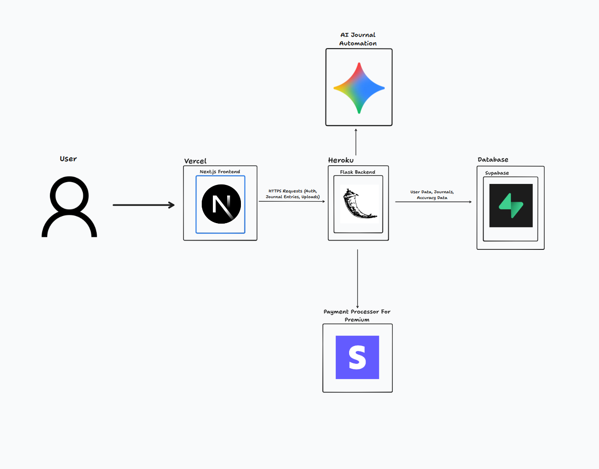
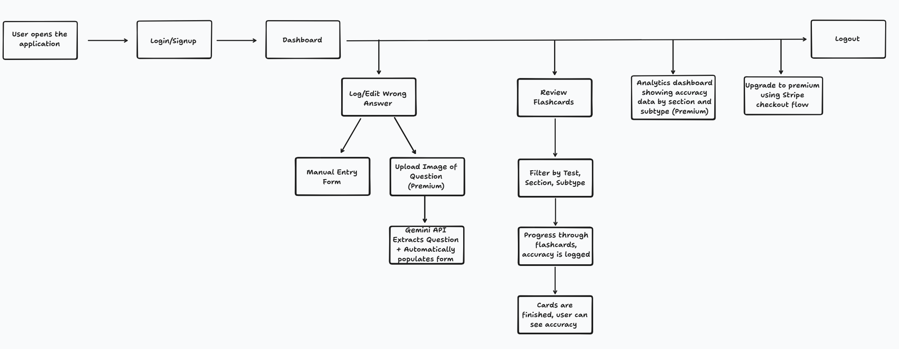

Project Overview
WrongAnswerJournal is an AI-powered test preparation platform that helps students learn from their mistakes. Students can upload a screenshot of a question with their incorrect answer and get a detailed explanation of why the answer is wrong. Students can also review answers they previously got wrong via flashcards. Premium users have access to analytical insights to study more efficiently.
250+
Active Users
$100
Monthly Revenue
System Architecture

User Flow Diagram
